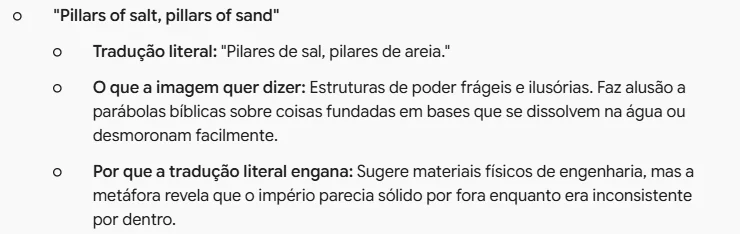
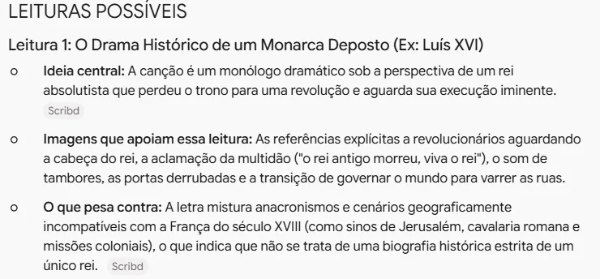
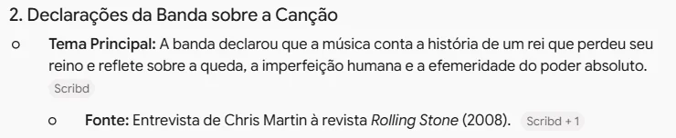

Entender a letra de uma música
Peça ao Gemini o sentido de uma música em inglês, separe o que é fato do que é interpretação e confira antes de levar para a aula
Um rei que hoje varre a rua. Sinos tocando em Jerusalém. Pilares de sal e de areia. Faz sentido?
Fato. O título vem de um quadro de Frida Kahlo.
Fato. A banda contou que é a história de um rei que perdeu o reino.
Leitura possível. A queda de quem tinha poder: tudo pode virar de uma hora para outra.
Leitura possível. Culpa e perdão: o rei se pergunta se será aceito no céu.
It's raining cats and dogs.
Está chovendo gatos e cachorros.
Está chovendo canivetes.
- letra de música é cheia de imagens assim
- o sentido depende de história, religião e contexto
Entenda, não só traduza
- No exemplo, o professor quer trabalhar "Viva la Vida", do Coldplay, com o 9º ano.
- Tradução palavra por palavra ele acha em qualquer site. O que falta é o sentido: quem é esse rei, o que são aquelas imagens.
- A IA ajuda a explicar e a propor leituras. Mas interpretar arte não tem resposta única, e a palavra final é sua e da turma.
Viva la VidaColdplay · 2008 · letra original em inglês
- Estrofe
- Refrão
- Estrofe
- Ponte
Copie a letra original
- Procure a letra num site de letras conhecido, que paga os direitos aos autores.
- Copie a letra em inglês, completa. É sobre ela que o Gemini vai trabalhar; tradução de site às vezes já vem com erro.
Tocar a música e discutir a letra em aula, pode. Publicar a letra ou a tradução inteira em blog, site ou rede social, não: a letra tem direito autoral. Por isso este tutorial não mostra nenhum verso.

Abra o Gemini
- No computador ou Chromebook, com a conta @educa (institucional).
- Comece uma conversa nova. Ela vai durar três pedidos, e cada um se apoia no anterior.
Sou professor de inglês do 9º ano (14 anos) e quero trabalhar em sala a música "Viva la Vida", do Coldplay. Não quero só a tradução: quero entender o que a letra diz. Faça uma tradução do sentido, não palavra por palavra: 1. Divida a letra em partes (estrofes e refrão) e conte, em duas ou três linhas, o que acontece em cada parte. 2. Liste as expressões e imagens que não fazem sentido ao pé da letra. Para cada uma, diga: o que a tradução literal diria, o que a imagem quer dizer e por que a tradução literal engana. Não reescreva a letra traduzida linha por linha. A tradução eu já tenho; quero a explicação. Letra: [cole aqui a letra]
Peça o sentido
- Diga quem você é e para quê: professor, 9º ano, aula. A explicação muda conforme o leitor.
- "O que a tradução literal diria": ver as duas lado a lado é o que mostra por que palavra por palavra engana.
- Troque [cole aqui a letra] pela letra copiada. Para pular linha sem enviar: Shift + Enter.

Leia as imagens explicadas
- Primeiro vem o resumo de cada parte. Depois, cada imagem em três linhas: o literal, o que quer dizer e por que o literal engana.
- Nos pilares de sal e de areia, o literal parece material de construção. O sentido é um poder que parecia sólido e era frágil.
- Repare quantas imagens vêm da Bíblia e da história. Sem esse contexto, a tradução vira uma lista de frases soltas.
Agora me ajude a interpretar a música. Separe a resposta em duas partes. FATOS: o que dá para conferir. Quando a música saiu, de onde vem o título, o que a banda disse sobre ela e quais referências históricas e religiosas aparecem na letra. Para cada fato, diga de onde ele vem (quem disse, em que veículo, em que ano). Não invente declarações da banda: se não souber a fonte, escreva "não sei a fonte". LEITURAS POSSÍVEIS: duas ou três interpretações diferentes. Para cada uma, dê a ideia em uma frase, as imagens da letra que apoiam essa leitura e o que pesa contra ela. Não escolha uma leitura como a certa. Interpretação de arte não tem resposta única.
Separe fato de leitura
- Fato se confere: data, origem do título, o que a banda disse. Leitura se discute.
- "Não invente declarações da banda": a IA às vezes cria frases que o autor nunca disse, e com toda a convicção.
- "O que pesa contra" faz cada leitura vir com o seu limite. Assim nenhuma parece a resposta oficial.

Compare as leituras
- O Gemini propôs três leituras: o rei deposto, como Luís XVI; a queda de uma celebridade; e o medo do julgamento divino.
- Leia o "o que pesa contra" da primeira: Jerusalém e cavalaria romana não cabem na França do século XVIII. A própria letra desmente a leitura ao pé da letra.
- Todas se apoiam na letra. Na aula, a turma pode escolher e defender a sua, com as imagens como argumento.

Confira os fatos
- Aqui o Gemini errou: deu a frase do "rei que perdeu o reino" a Chris Martin, na Rolling Stone. Quem disse foi o baixista, Guy Berryman, em 2008.
- Olhe os links ao lado de cada fato. Um arquivo no Scribd ou um blog não são fonte: fonte é a entrevista original.
- Ele acertou em outro ponto: disse que Luís XVI é análise de críticos e que a banda nunca citou. É assim que se separa fato de leitura.
Mesmo com "não invente declarações da banda" no comando, a IA deu a frase à pessoa errada, com revista e ano. Fato vai para o quadro só depois de conferido.
Vou levar a música para duas turmas: 6º ano (11 anos) e 9º ano (14 anos). Para cada turma, sugira quatro perguntas de discussão, das mais simples às mais abertas, que façam os alunos pensarem sobre a letra sem que eu entregue a interpretação pronta. Inclua uma pergunta que ligue a música à vida deles, como perder algo, mudar de lugar ou se arrepender. Não copie versos nas perguntas: fale das imagens com as suas palavras.
Leve para a turma
- Em vez de explicar a música, pergunte. As leituras que o Gemini propôs viram ponto de partida para a turma.
- Peça perguntas por idade: com 11 anos, a história do rei; com 14, a culpa, o poder e as referências.
- Escolha as perguntas que combinam com a sua turma e reescreva do seu jeito.
Veja a diferença
- Interativo: toque em uma imagem da letra para ver o que ela pode querer dizer.
- Do lado esquerdo, a imagem contada com outras palavras. Do direito, o fato ou a leitura possível, sempre dizendo qual dos dois.
A IA explicou a letra em minutos, mas também pode inventar o que o autor disse. Confira os fatos antes da aula e apresente as leituras como leituras.